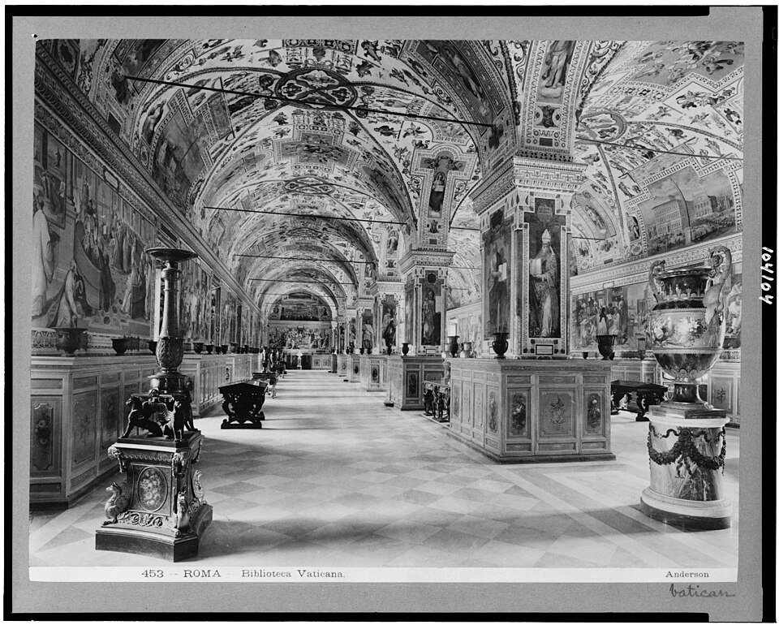
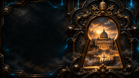

DOSSIER 01 · FICTION
SALVATORE VENTRESCA
Der Archivar
Ein Ordensbruder im Vatikanischen Archiv. Seine Entdeckung setzt die Ermittlungen in Gang.
Eine Datei aus der Zukunft. Ein Toter im vatikanischen Archiv. Eine künstliche Intelligenz, die entscheiden könnte, wessen Stimme zählt.
01 / FILMISCHES ERLEBNIS
Eine zwölfsekündige animierte Einführung in die Welt des Romans. Bei reduzierter Bewegung bleibt die Darstellung statisch.
Eine zwölfsekündige animierte Einführung in die Welt des Romans. Bei reduzierter Bewegung bleibt die Darstellung statisch.
02 / BAND EINS
Entdecke Band 1 als E-Book und in gedruckten Ausgaben. Die Verfügbarkeit richtet sich nach dem jeweiligen Amazon-Shop.
Kindle · 3,99 € · Taschenbuch · In Prüfung · Hardcover · In Prüfung
03 / DIE WELT
Historische Orte treffen auf eine fiktive Verschwörung. Die realen Fotografien dienen als Kulisse, Technologie und Ereignisse gehören zum Roman.


04 / FIGURENDOSSIERS
Drei Lebenswege kreuzen sich an einer Datei, die nicht existieren dürfte. Jeder kennt einen Teil der Wahrheit.
Der Archivar
Ein Ordensbruder im Vatikanischen Archiv. Seine Entdeckung setzt die Ermittlungen in Gang.
Der Theologe
Theologe und Sprachwissenschaftler zwischen Beweis, Auslegung und institutioneller Macht.
Die Messtechnikerin
Spezialistin für Messung und Überprüfung. Sie folgt der technischen Spur der Anomalie.
05 / IM ROMAN
Originalauszug aus Kapitel 1 der deutschen Buchfassung, keine Nacherzählung.
Der Vatikan · Sperrmagazin des Vatikanischen Apostolischen Archivs · 03:17 Uhr, 12. Juni 2035
Das zweite Klicken war leiser als das erste. Zuerst schnappte der mechanische Riegel zurück – schwer, geschmiedet, eingebaut, lange bevor der Strom diesen Flügel erreicht hatte. Dann antwortete die Spule des elektromagnetischen Schlosses – ein kurzes, trockenes, modernes Geräusch, das sich über das alte legte.
Über der Tür leuchtete die Anzeige OCCUPATO auf. Bruder Salvatore Ventresca ließ die Hand auf dem stählernen Griff, bis die Schritte im Korridor verklungen waren. Durch das dünne Leder des Handschuhs spürte er die Kälte des Metalls. Hier war alles kalt: Stahl, Stein, eine Luft, die man um des Papiers willen auf fünfzehn Grad hielt, nicht um der Menschen willen.
Originalauszug aus Kapitel 1 · DOMINUS: Das Vatikan-Protokoll · Band 1: Schisma
06 / DIE FRAGE
Ein unmöglicher Archivfund. Eine gefährliche Untersuchung. Eine Frage, über die kein Algorithmus allein entscheiden sollte.